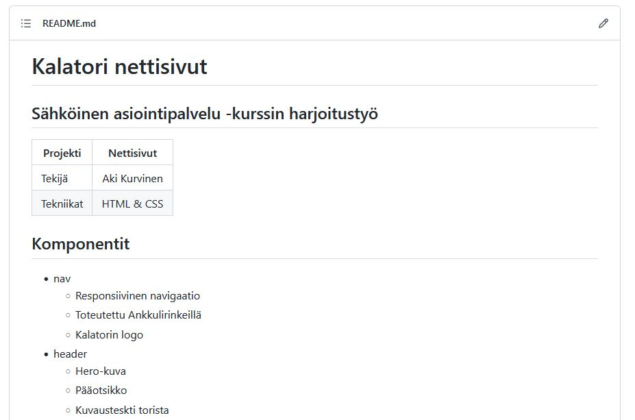

Demo 5 - Kalatori: dokumentaatio
html_css_basics
|
├── demos
| |
│ └── d5_kalatori
| |
│ ├── README.md
| |
│ ├── index.html
│ ├── common.css
| |
│ ├── header.html
│ ├── header.css
│ ├── markkinat.html
│ ├── markkinat.css
│ ├── hinnasto.html
│ ├── hinnasto.css
│ ├── yhteys.html
│ ├── yhteys.css
│ ├── sijainti.html
│ ├── sijainti.css
│ ├── footer.html
│ ├── footer.css
| |
│ └─── img
│ │ ├── kuva_1.jpg
│ │ └── kuva_2.jpg
|
Toteuta projektin dokumentaatio
Dokumentointityylejä on useita ja jotain on aina parempi, kun ei mitään
- Lisää projektin juurikansioon README.md
- Harjoittele markdown syntaksia (eri asia kuin html)
- Käytä muotoilussa apuna https://markdownlivepreview.com/
- Lisää pääotikko 'Kalatori nettisivut'
- Lisää alaotsikko 'Sähköinen asiointipalvelu -kurssin harjoitustyö'
- Tee 2-sarakkeen taulukko:
- Markdownin taulukoissa pitää olla otsikkorivi, joten lisää siihen esim. otsikot: (Projekti | Kalatori nettisivut)
- Lisää taulukkoon sisältörivejä:
Tekijä | Oma Nimi
Tekniikat | HTML & CSS
- Tee taulukon alle alaotsikko "Komponentit"
- Tee listaus kaikista sivun osista esim. nav, header, section (näitä on useita) & footer
- Selitä lyhyesti kunkin komponentin tarkoitus
- Ota kuvakaappauksia valmiista nettisivusta ja lisää ne repoon sekä näkyville readme -tiedostoon
- Tee ennen kuvakaappauksia alaotsikko ”Julkaisut”
- Tee sen alle otsikko ”Julkaisu 1”
- Listaa Julkaisu 1 alle kaikki tähän mennessä toteutetut komponentit/osiot/featuret
Julkaisu 1
- Header
- Nav
- Toteuta puuttuvat osiot ja päivitä samalla dokumentaatiota:
- Lisää esim.:
Julkaisu 2
Lisätty:
- hinnasto
- footer
- Tallenna muutokset GtHubiin ja katselmoi README sisältö github.com sivulla
- https://github.com/OmaNimi/html_css_materiaalit_2022/tree/main/demos/d5
- README.md sisältö pitäisi näkyä tiedostojen alla. Tarkista, että listat sisentyvät oikein ja kuvakaappaukset näkyvät
